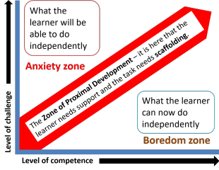

TKT Module 1: Background to language teaching
Practice activities and tasks for language and language skills
development

Learning to use a foreign language is more like learning to play
an instrument than learning a set of facts and figures.
Practising, therefore, forms the core of most lessons.
 |
Key concepts in this guideBy the end of this guide, you should be able to understand and use these key concepts: |
Look out for these words like this
in the text.
There will be tests at the end of the guide for you to check that
you understand the ideas.
 |
Practice vs. Assessment |
These two concepts are entwined like a rope and difficult to
separate. However, it is clear that many tasks can be used for
both purposes. The next guide focuses on assessment and many of
the task types discussed here will be relevant to that guide, too.
The difference is what the task is for, when it happens and what the
learners believe it is for. Here's an overview to make things a
little clearer:

 |
Tasks vs. Activities |
- tasks usually have specific outcomes which are measurable in some way. For example:
- A writing task involving filling gaps in a paragraph from a
choice of phrases may be a half-way house on the road to writing
a paragraph without guidance and it will have a right/wrong
outcome. Either the learners
make the right choices, or they don't.
A task to write a 300-word essay on a subject of the learner's choosing is almost completely unguided but it will still have a measurable outcome (although it may be quite difficult to identify success or failure). - activities do not usually have specific outcomes because it is the process of doing the activity which is more important. For example:
- Asking students to talk together and think of three good
ideas for making their town better will practise both a speaking
skill (presenting and responding to ideas) and some language
structures (speculation, possibility etc.) but it will not have
a measurable product and need not have one. It is the
doing of the task which is important, not the
ideas which come from it.
Getting students to tell each other what characters in a video clip they find the most and least attractive is certainly valuable language practice and also requires them to understand and provide reasoning. The process is what is important here because we cannot (and don't need to) measure the outcomes in any useful way.
 |
Feedback |
Both tasks which have a product and activities which do not can be used for practice. One difference lies in the feedback which you give and get.
- product tasks require more precise feedback
- Learners need to know that the product of the task is
acceptable and teachers need to know whether it is safe to move
on to the next phase of a lesson.
Feedback, therefore, both from the learners and from the teacher has to be quite thorough. - process activities often need very little feedback
- Because the doing is more important than the production, what the learners actually produce is probably not important. It has to be valued in some way to maintain motivation and commitment but it needn't be judged on a right / wrong / not bad basis.
 |
Level of control |
We can divide tasks and activities into how controlled they are
(i.e., how much freedom the learners are allowed).
This is not a simple either-or distinction because, as the lady on
the horse will tell you, there are many levels of control and levels
of freedom.
It can look
like this:

For example, writing an email with a list of 5 points to include
will be more controlled than writing about anything you like but
freer than a sentence-completion exercise. Changing the tense
forms of verbs in a text may allow for more than one right answer so
is not as controlled as a multiple-choice test and so on.
  |
Task 1:
Divide this list in three: controlled tasks semi-controlled tasks free tasks Then click on the table to get an answer. |

There is no absolute rule but tasks in lessons are usually linked,
with controlled practice coming before freer practice. We
might get a sequence like this:

Notice
- how the tasks and activities get slowly freer and more challenging as the lesson goes on
- how the freer tasks focus on language in use and the controlled tasks only on usage (i.e., form)
 |
Scaffolding and level of challenge |
This is a key concept.
When learners are engaged in practice tasks or activities, they
may need help and advice. The teacher's role here is to
support the learners without doing the task for them.
That's scaffolding.
- If the learners need no help
- then the task is too easy or the activity is simply to get them thinking about the topic. Tasks like these do not help learners to learn.
- If the learners cannot do the task at all without help
- then the task is too difficult and should not have been set. It will not be helpful.
- If the learners can do most of the task but need some hints, a bit of help or advice
- then the task is at the right level and will aid their development.
Getting the level of challenge right is not a simple job.
The task needs to be pitched in what is called the
zone of development. The zone of
development is the place where learning takes place. Too
difficult and it demotivates, too easy and it bores. Right in
the middle and real learning takes place.
If you prefer a picture:

The trick in getting the level of challenge right is to keep the
learners out of the anxiety and boredom zones. It is not s
simple issue. There is a much more technical
guide to
scaffolding and the ZPD on this site.
 |
Types of activity and task |
There are far too many task and activity types for any list to be
complete. Here, we will focus on common tasks and divide them
into some obvious categories. If you look through a range of
coursebooks or hunt the web, you will find more than you will ever
need.
Each time you find a task, it is worth asking some questions:
- Does this task or activity practise or test?
- Is this a product or a process task? How important, in other words, is the product?
- What does it target?
- Is it controlled or freer? Where should it come in the lesson?
| Task type | Nature | Comment |
| Drilling | Controlled Language systems |
May be useful for automatising language |
| Gap-filling | Controlled Language systems |
Can be made more or less controlled by giving choices or not |
| Skeleton sentences | Controlled Language systems |
Expanding, e.g., She / yesterday / shopping / new dress into She went shopping yesterday for a new dress can be useful grammar practice |
| Multiple-choice comprehension questions | Controlled Receptive skills |
For focusing on listening skills and reading skills. The nature of the subskill the learners must use will be determined by the question type |
| Writing what you like on a particular topic | Free(r) Productive skills |
Left alone, learners will often play safe and avoid structures or lexis they are not sure of |
| Dictation | Controlled Language systems and Receptive skills |
There are different kinds of dictation with various levels of control |
| Role-plays |
Semi-controlled Productive skills |
The amount of control can be varied by giving people more or less information to include in their speaking |
| Information gap activities |
Semi-controlled All skills |
Each student has different information which they must put together to achieve a task. Learners are forced to communicate |
| Read the headline / Look at the picture and speculate about text content |
Semi-controlled Receptive skills |
This is an awareness-raising activity to get the learners thinking. Product is less important |
| Plan the perfect school (starting with a blank sheet of paper) | Free(r) All skills |
This is a major task requiring a range of skills and language. It could be part of a task-based learning approach |
| Match the picture to the word / the definition to the word / the intonation to the emotion | Controlled Language systems |
Matching tasks are useful for checking learning and for introducing new language |
| Identify the difference between what you read and what you hear | Controlled Receptive skills |
A useful intensive listening and reading activity |
| Put the paragraphs in the right order | Controlled Language systems |
Focusing on text structure and discourse markers and a useful awareness-raising task |
| Transform the text from present to future (etc.) / from formal to informal / etc. | Controlled Language systems |
This is mostly a meaning-free exercise focusing on form not use |
 |
Self-test questions |
Before you go on, make sure you can answer these questions. If you can't, go back to the sections which give you trouble.
If you are happy with your progress, go on.
 |
Tests and practice for TKT |
| Test 1 | A short matching task |
| Test 2 | A gap-fill test |
Return to the Module 1 index:

or go on to the next
guide which is to assessment types and tasks.